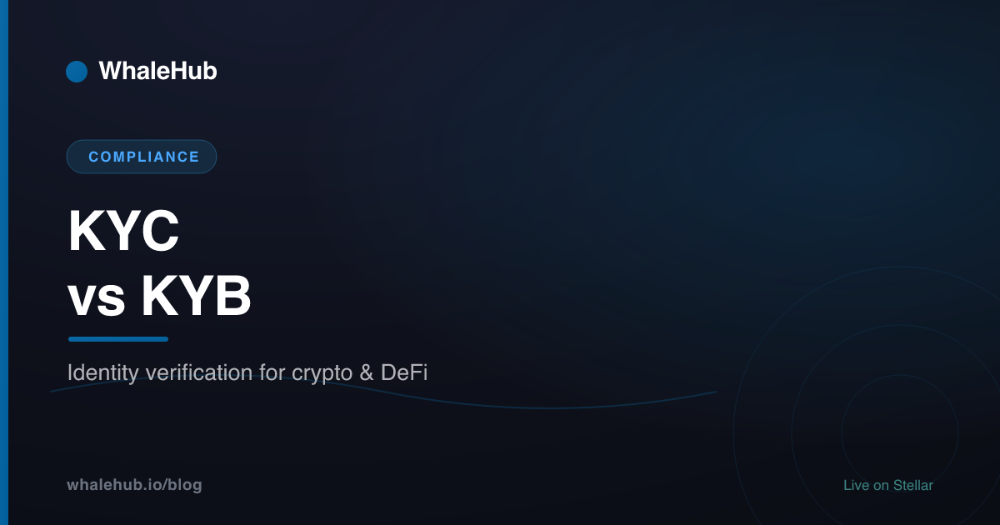

KYC vs KYB: Identity Verification in Crypto & DeFi

Every regulated crypto platform needs to know who it is dealing with. KYC ("Know Your Customer") verifies an individual person. KYB ("Know Your Business") verifies a company and the real humans behind it — its ultimate beneficial owners. Both sit inside a broader anti-money-laundering (AML) programme, alongside sanctions screening and ongoing monitoring. This is a plain-English explainer of how the two differ and why crypto exchanges and DeFi front-ends use them. It is educational, not legal advice.
What is KYC?
KYC — Know Your Customer — is the process of verifying that an individual is who they claim to be. A platform collects a person's name, date of birth, and address, checks a government ID document, and often a live selfie, then screens the person against sanctions and watchlists. It is the front door of any AML programme.
KYC exists so that financial services can attach a real, verified identity to an account before money starts moving. In crypto, that usually means uploading a passport or driving licence, taking a "liveness" selfie so the platform can match your face to the document, and confirming an address with a utility bill or bank statement. Behind the scenes the platform also checks that you are not on a sanctions list or flagged as a politically exposed person (PEP).
Importantly, KYC is not a one-time gate. A good programme keeps watching after onboarding — re-verifying when something changes and monitoring transactions for patterns that do not fit the customer it thought it knew. That continuous element is what turns a single ID check into genuine anti-money-laundering coverage.
What is KYB?
KYB — Know Your Business — verifies a company rather than a person. It confirms that the business legally exists, is in good standing, and is not sanctioned, then maps its ownership to identify the ultimate beneficial owners (UBOs) — the real people who control it. KYB typically runs KYC on each of those individuals too.
When a platform onboards a business — say a company that wants a corporate exchange account — a single ID check is not enough. The platform needs to know the legal entity is real (pulling company-registry records), that it is active and not dissolved, and critically, who ultimately stands behind it. Companies can be owned by other companies, trusts, or nominees, so KYB works down through that structure until it reaches flesh-and-blood people.
Those people are the ultimate beneficial owners. Many frameworks treat anyone holding roughly 25% or more of a company as a UBO worth identifying, although the exact threshold and definition vary by jurisdiction. Once the UBOs are identified, each of them is put through KYC. In other words, KYB wraps around KYC — it is the entity-level check that contains individual-level checks inside it.
KYC vs KYB: the key differences
The core difference is the subject: KYC verifies a person, KYB verifies a business and the people who own it. KYB is broader — it adds company-registry checks and the crucial extra step of identifying ultimate beneficial owners. Both feed the same goal: a compliant, sanctions-clean AML programme.
Here is how the two line up across the dimensions that matter most:
| Dimension | KYC (Know Your Customer) | KYB (Know Your Business) |
|---|---|---|
| Who it verifies | An individual person | A company or legal entity — plus the people behind it |
| What's checked | Identity document, selfie/liveness, address, sanctions & PEP status | Legal registration, company status, ownership structure, sanctions |
| Data sources | ID documents, biometrics, credit/identity databases, watchlists | Company registries, filings, UBO registers, plus KYC on each owner |
| When it's used | Retail sign-ups, on-ramps, individual exchange accounts | Corporate accounts, partners, merchants, institutional onboarding |
| Extra step (UBO) | Not applicable — the customer is the end person | Must identify ultimate beneficial owners and run KYC on them |
A useful mental model: KYB is KYC with an ownership map bolted on top. You still end up verifying real people at the bottom — you just have to work through the corporate structure to find them first.
Why crypto and DeFi platforms use them
Crypto exchanges and other virtual-asset service providers (VASPs) use KYC and KYB to meet anti-money-laundering and counter-terrorist-financing (AML/CFT) obligations. That means screening customers against sanctions and PEP lists, monitoring activity for suspicious patterns, and — under the FATF Travel Rule — sharing sender and recipient details on transfers above a threshold.
The underlying logic is the same one that has governed banks for decades: if you let anonymous actors move value, you make it easy to launder proceeds of crime, evade sanctions, or finance terrorism. Regulators therefore expect any business that touches customer funds to know who those customers are. For crypto, several pieces stack together:
- AML/CFT programmes. KYC and KYB are the identity foundation. On top sits transaction monitoring, record-keeping, and reporting of suspicious activity to the authorities.
- Sanctions & PEP screening. Customers are checked against sanctions lists and flagged if they are politically exposed persons — people whose position carries higher corruption risk — for enhanced scrutiny.
- The FATF Travel Rule. An international standard (Recommendation 16, extended to virtual assets in 2019) that asks VASPs to pass verified originator and beneficiary information alongside qualifying transfers, mirroring the rule for bank wires.
- VASP obligations. Exchanges, custodians, and many on-ramps are increasingly licensed or registered and carry duties much like traditional financial institutions.
Exact rules, thresholds, and even the definition of who counts as a VASP differ from country to country — and they keep changing. Treat the list above as the shape of the obligations, not a checklist for any single jurisdiction.
How verification works, step by step
Under the hood, both KYC and KYB follow a similar pipeline: collect information, verify it against a document or registry, screen the subject against sanctions and PEP lists, assign a risk score, then monitor on an ongoing basis. The difference is what gets collected and where the verification data comes from.
A typical onboarding flow looks like this:
1. COLLECT Gather data — ID + selfie (KYC), or company
details + ownership info (KYB)
2. VERIFY Check the document/biometrics, or confirm the
entity against a company registry
3. SCREEN Run the subject against sanctions & PEP lists
4. RISK SCORE Assign a risk rating; escalate to enhanced
due diligence where risk is higher
5. MONITOR Keep watching transactions and re-verify when
circumstances change (ongoing monitoring)For KYC, step 2 is largely automated — document authentication and face-matching happen in seconds. For KYB, step 1 and 2 are heavier: the provider pulls registry filings, maps the ownership tree, and then loops each identified UBO back through the KYC flow. Higher-risk cases in either path trigger "enhanced due diligence," which means more documents and human review. And step 5 never really ends — ongoing monitoring is what keeps a verified identity meaningful over time.
- Retail crypto users — you complete KYC when signing up to a centralised exchange or fiat on-ramp.
- Businesses & institutions — corporate accounts, market makers, and partners go through KYB, including UBO checks.
- Exchanges, custodians & on-ramps (VASPs) — they run the programmes and carry the regulatory duty.
- Builders — if your product takes custody or handles fiat, verification obligations can reach you regardless of where you are based.
KYC, KYB & the decentralization question
Identity verification assumes there is an intermediary to perform it. Centralised exchanges and custodians clearly qualify. Genuinely decentralised protocols — code with no operator collecting funds — have no one positioned to run KYC, which is why obligations tend to land on the intermediaries around DeFi rather than the smart contracts themselves.
This mirrors the nuance we cover in our MiCA explainer: regulation generally targets identifiable issuers and service providers, not autonomous code. A useful test regulators apply is "who operates it?" — a slick app run by a company with a token treasury looks very different from a truly permissionless contract that nobody controls. Most teams sit somewhere on that spectrum, and where a given protocol lands shapes whether verification obligations attach.
The picture is also still moving. Standards bodies and lawmakers are actively studying how — or whether — to apply identity rules to decentralised finance, so today's answer is a snapshot rather than a settled position. If you want the surrounding context, our Stablecoins on Stellar piece covers how regulated, fiat-backed tokens flow through this same environment, and the Stellar DeFi guide maps the wider stack.
Where does WhaleHub fit? WhaleHub is a non-custodial yield optimiser, not an exchange and not a KYC/KYB vendor — it does not itself perform identity verification. You connect a wallet, stake AQUA, and receive BLUB as a liquid receipt whose value floats with the market; the protocol aggregates ICE voting power and auto-compounds Aquarius rewards while you keep control of your assets. The wallets, on-ramps, and exchanges you use to acquire assets in the first place are the parts of the journey where KYC typically applies.
Choosing a verification provider
If you run a platform that needs KYC or KYB, the provider you pick shapes both compliance and user experience. Look for broad document and country coverage, reliable biometric and liveness checks, sanctions and PEP screening, UBO discovery for business onboarding, ongoing monitoring, and Travel Rule support — balanced against onboarding drop-off and cost.
The market is crowded, and the right choice depends on who you onboard. A retail-only app leans on fast, high-conversion KYC; a platform serving companies needs deep KYB with automated UBO mapping across many registries. Practical things to weigh:
- Coverage. Which countries, document types, and languages are supported where your users actually are.
- Accuracy vs friction. Strong fraud detection that still lets genuine users through — abandonment is a real cost.
- Screening depth. Sanctions, PEP, and adverse-media checks, plus ongoing re-screening rather than a one-off pass.
- KYB & UBO. Registry connections and the ability to resolve layered ownership automatically.
- Travel Rule & monitoring. Support for VASP-to-VASP data sharing and continuous transaction monitoring.
If you are curious how programmable tokens underpin many of these on-chain flows, Soroban smart contracts explains the mechanics.
The short version: KYC answers "is this person real?" and KYB answers "is this business real, and who is really behind it?" Both are AML tools, both increasingly apply to the crypto intermediaries you pass through, and both are evolving. Remember UBOs, the collect-verify-screen-score-monitor pipeline, and the "who operates it?" test, and you have the shape of identity verification in crypto.
Frequently asked questions
What is the difference between KYC and KYB?
KYC (Know Your Customer) verifies an individual person — their identity, using an ID document and often a selfie. KYB (Know Your Business) verifies a company: its legal registration, status, and the real humans who ultimately own or control it. KYB usually includes running KYC on those owners, so it is the broader of the two.
What is a UBO?
A UBO, or ultimate beneficial owner, is the real person who ultimately owns or controls a company — even through layers of holding companies or nominees. Many rules flag anyone holding roughly 25% or more, though the exact threshold varies by jurisdiction. Identifying UBOs is the core extra step that makes KYB harder than KYC.
Do DeFi platforms require KYC?
It depends on who operates them. Centralised exchanges and fiat on-ramps almost always require KYC. A genuinely decentralised protocol with no operator collecting funds typically has no one positioned to run identity checks. Many teams sit in between, and requirements are evolving, so treat any given platform on its own terms.
What is the FATF Travel Rule?
The FATF Travel Rule (Recommendation 16, extended to virtual assets in 2019) requires virtual-asset service providers to share verified sender and recipient information for transfers above a threshold — often around 1,000 USD or EUR. It mirrors a long-standing rule for bank wires. Exact thresholds and timing vary by jurisdiction.
Is KYB harder than KYC?
Generally yes. KYC checks one person against an ID document. KYB must confirm a company's registration and legal status, map its ownership structure, identify the ultimate beneficial owners, and then run KYC on each of them. More documents, more data sources, and more manual review make KYB slower and more involved.
WhaleHub is a yield-optimization protocol on Stellar. We stake AQUA, aggregate ICE voting power, and auto-compound Aquarius rewards for stakers. This series explains the Stellar DeFi stack — and the compliance landscape around it — in plain English.
Earn on a compliance-ready network
Stellar was built for regulated digital money. Put its AQUA ecosystem to work with WhaleHub — stake, get BLUB 1:1, and auto-compound.
Launch the appThis article is for educational and informational purposes only and is general information, not legal, tax, or financial advice. AML, KYC, and KYB requirements evolve and vary by jurisdiction; nothing here should be relied on for compliance decisions. WhaleHub is a non-custodial protocol and does not perform identity verification. DeFi involves risk, including the potential loss of capital. Do your own research and consult a qualified professional before making decisions.